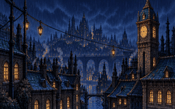
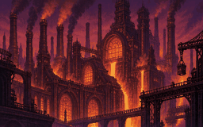
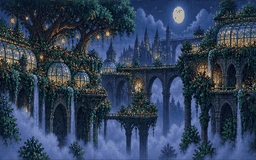
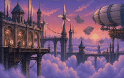
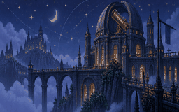
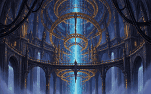

01 / START HERESpark District
Mara keeps the radio on. A safe first delivery teaches movement and both charges; the next posts open the western and eastern routes.
A city waiting for light.
One courier. Everyone connected.
Carry the last spark through Lumen. Cyan carries signal; amber carries power. Reconnect both, deliver to the people waiting, and watch six neighborhoods wake up. Run rainlit rooftops, climb the hanging gardens, and ride the wind above the clouds. Every delivery reconnects a piece of the city.
One spark. Six neighborhoods. A light to come home to.
A new night shift. Progress saves automatically in this browser.
Connect a controller, then press a button.
SNES layout: D-pad to move, bottom B to jump, Y or A to dash, START to pause, SELECT to retry, L or UP + SELECT for the world map. R also dashes on standard layouts.
On Windows, use your controller’s Windows / X-input mode when available, connect by USB or Bluetooth, then press a button on this page. If the buttons do not match, teach the game your layout below.
For the SN30 2.4G made for SNES Classic, connect the controller itself to the PC with a USB cable. Its bundled receiver is for the console.
Let go of all buttons and sticks before starting setup. Your layout is saved in this browser for this controller and connection mode.
Hold jump for height. Press into a wall to slide, then jump to kick off. Jump and dash in any direction. Land to recharge.
Dash to flip cyan ↔ amber. Touch each socket in its matching charge: cyan restores signal bridges, amber restores power bridges. Connect both to open the delivery beacon. Gates still require matching charge.
Meet a resident after each delivery. Finish three rooms and watch their neighborhood light up. Flags save your place; activated sockets survive retries. Find optional letters off the main route, then read them from the room chooser with Select / R. Progress stays in this browser.

01 / START HEREMara keeps the radio on. A safe first delivery teaches movement and both charges; the next posts open the western and eastern routes.

02 / WESTERN ROUTEBo and his sentries kept watch through the blackout. Restore the factory signal and send food and supplies to the upper docks.

03 / EASTERN ROUTEIvy saved every seed. Climb irrigation terraces and rope canopies to bring the water back, then send her seeds toward the sky.

04 / AFTER THE FOUNDRYKit needs the foundry running. Launch between freight docks and reconnect the main lift: every crate helps someone above.

05 / AFTER THE GARDENSSol has a home for Ivy’s seeds. Ride the wind to signal vanes, align the telescope, and give the city a bearing through the storm.

06 / BOTH ROUTES REUNITEDNell is waiting where the routes meet. Bring the districts’ work together, follow the pulse, and carry the final light home.